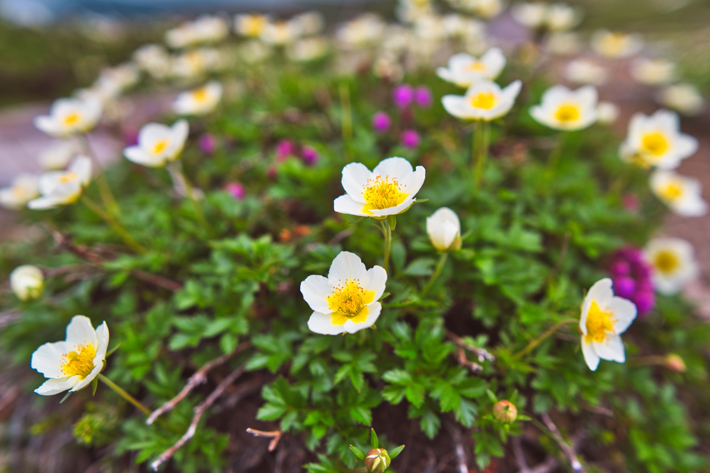
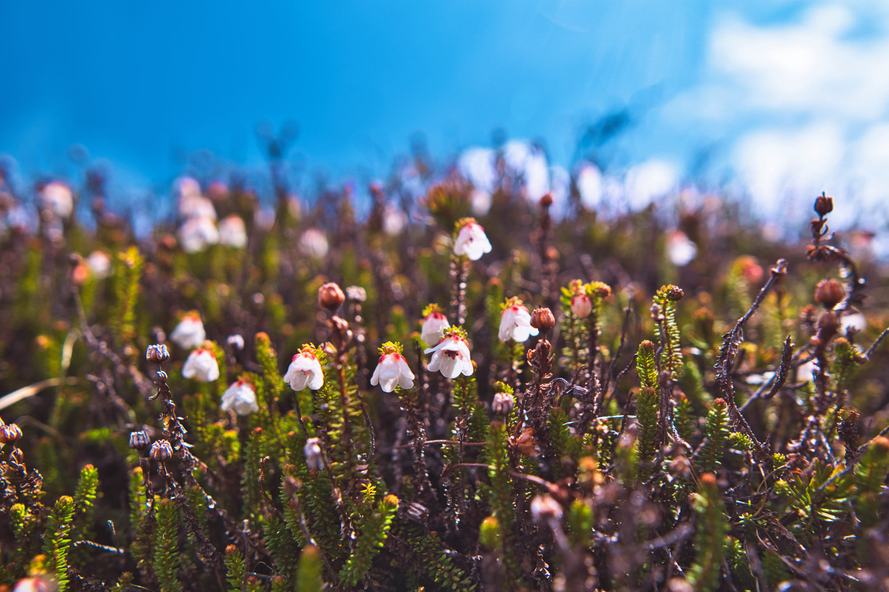
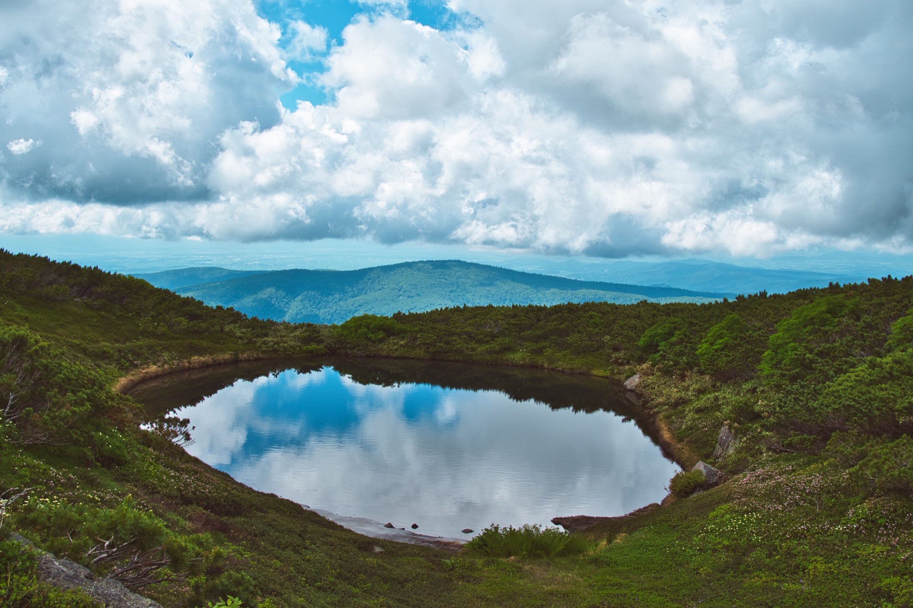
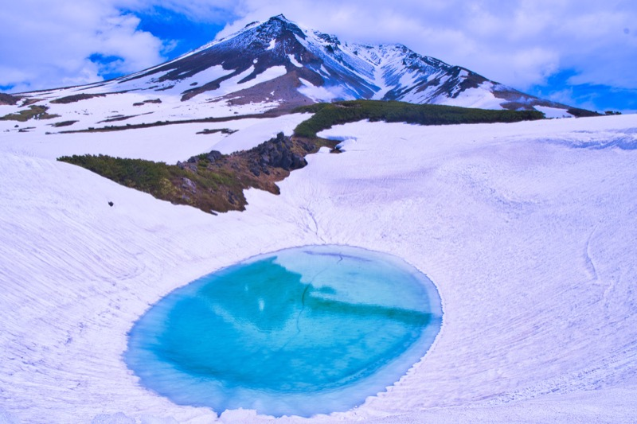

北海道の最高峰として知られる旭岳。ロープウェイを利用するれば、今も噴煙を上げるその勇姿を間近に見ながらスケールの大きな高山植物群生を気軽に楽しむことができる。 旭岳ロープウェイは基点の旭岳温泉から森林限界を越える標高1600mの姿見駅まで一気に運んでくれる。終点の姿見駅は高山のハイマツ帯の中にあり、本州の標高2500mの山岳地帯の匹敵する自然環境の場である。姿見駅を一歩外に出れば、そこにはもう高山植物の世界が広がっている。
散策路はループ状になっており、要所要所に展望台も設けられている。6月下旬から7月上旬頃なら歩き始めてすぐ、第一展望台に向かうまでの間に、エゾノツガザクラやチングルマなどの花に目を奪われるだろう。
ショウジョウバカマの紫色の花にも出会える。第三展望台に向かえばキバナシャクナゲやジムカデも目につく。各展望台では、文字通り「北海道の屋根」から見下ろす絶景に感嘆の声が上がるが、足元にはメアカンキンバイやエゾイソツツジなども咲いている。第二展望台周辺では7月中旬頃、イワブクロの群生を迎える。 夫婦池を過ぎたあたりでは、時期が合えば旭岳を背景に広がるチングルマなどの群生が見られる。その年の雪解け状況によるが概ね7月中旬頃だ。 この散策路は全長約1.7㎞。花を見ながらゆっくり歩いて、一周1時間半程度で高山植物を満喫することができる。
旭岳の麓にある姿見の池・すり鉢池・鏡池・満月池は、静かで美しく旭岳や噴煙、青空を映してくれますが、その誕生は過酷な環境を乗り越えて現在の形になったことは、あまり知られていません。
旭岳は今から約1〜2万年前ころに誕生し、2千年〜3千年前頃に山の西側が火山活動により大爆発。その後、大きく山容を変え、爆発跡には爆裂火口ができました。それが現在の地獄谷です。その当時の火山活動は、旭岳の麓でも起こっていて、幾つかの火口ができたりふさがったりを繰り返していました。その後、噴火の無くなった火口には、雨や雪で水が溜まり池のようになって、現在の姿見の池や夫婦池、満月池になりました。
